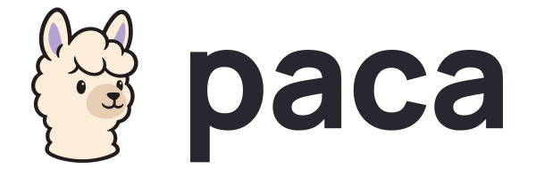
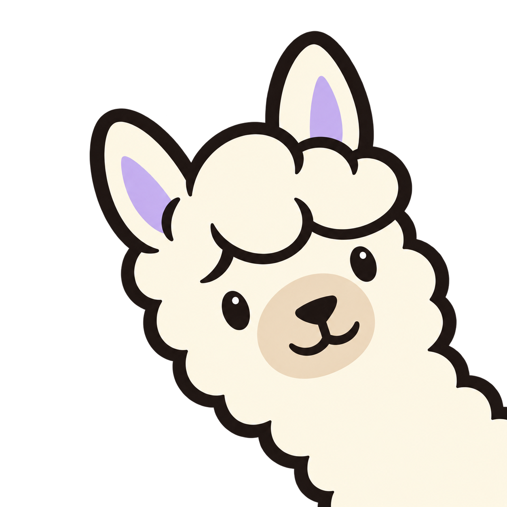
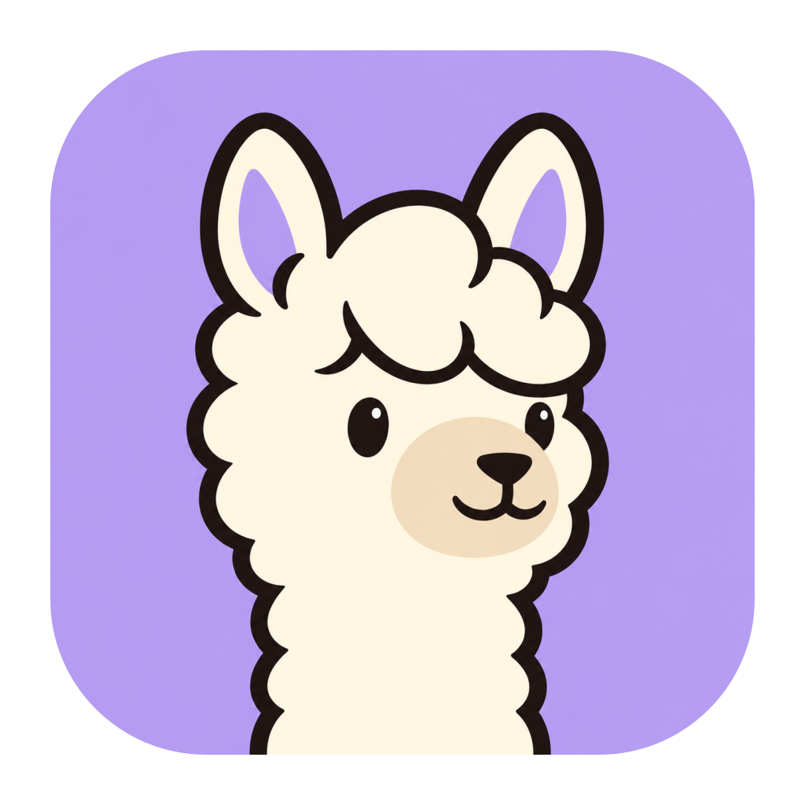
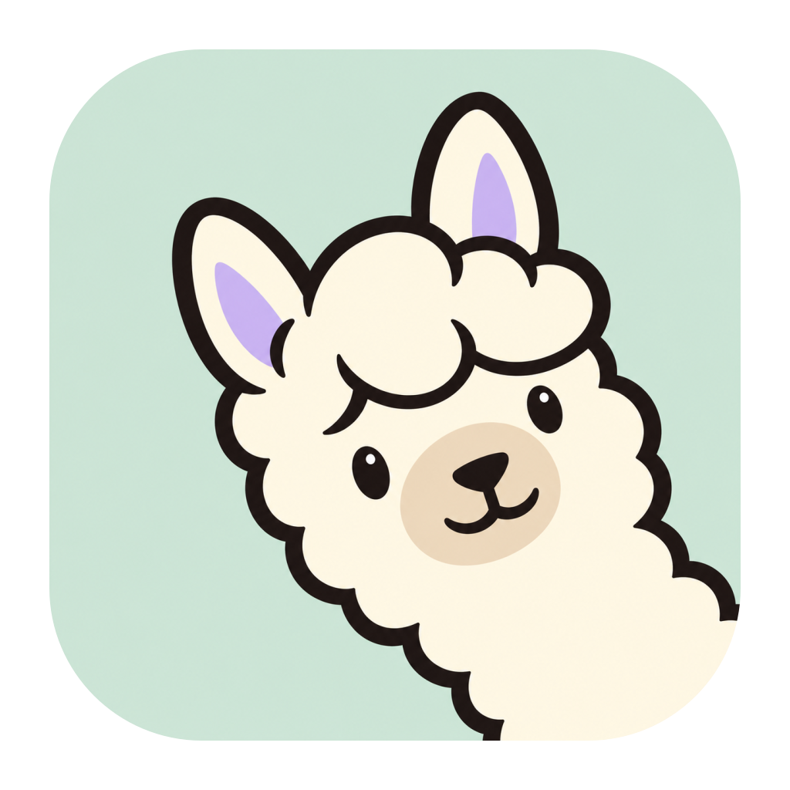
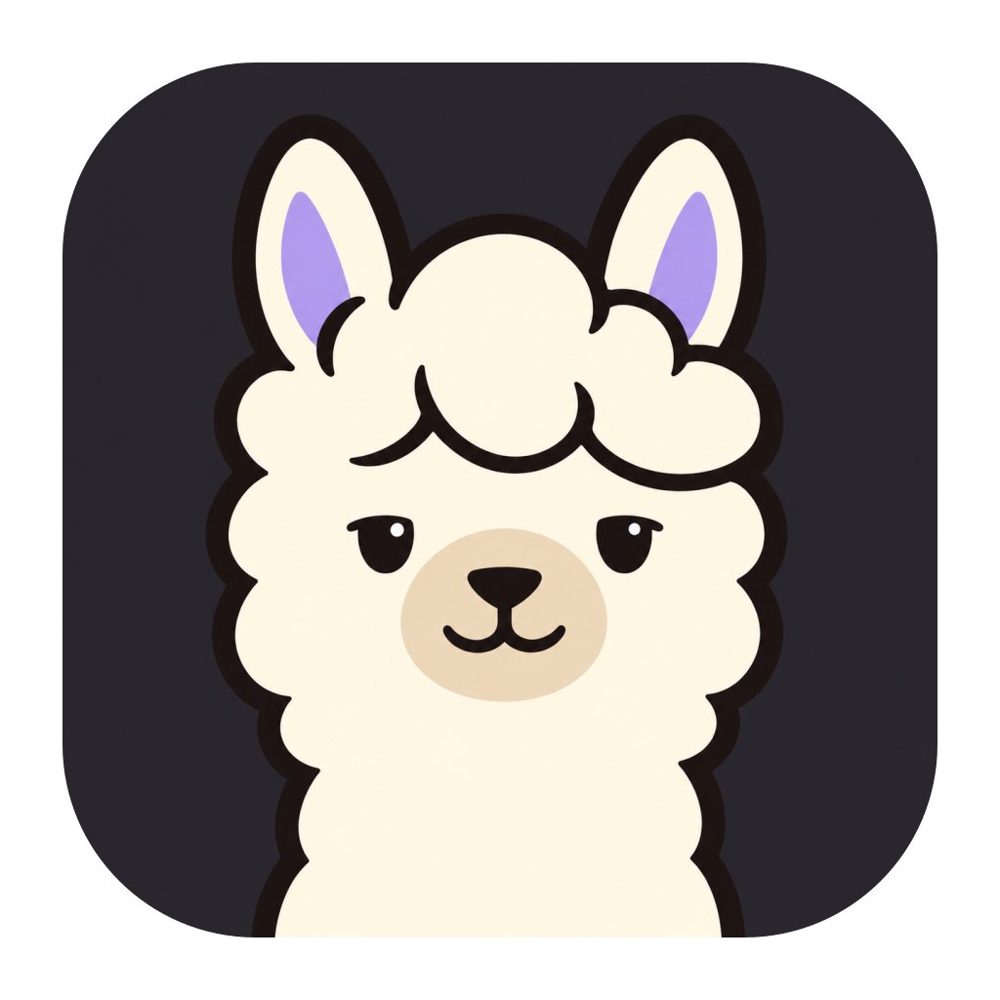
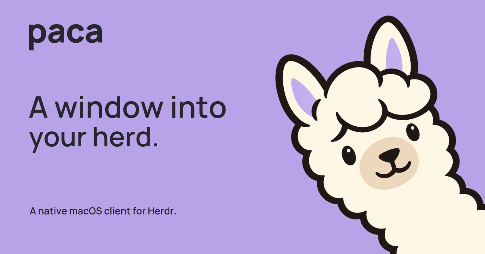
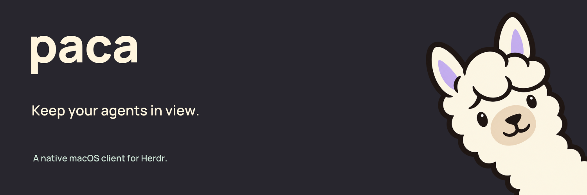

Paca / Brand kit 01
A window into
your herd.
A curious alpaca for a native macOS client.
Soft colors, a simple wordmark, and a mascot
that peeks in from the edge.
A curious alpaca for a native macOS client.
Soft colors, a simple wordmark, and a mascot
that peeks in from the edge.

Use the color mascot for larger brand moments. Use the one-color symbol when space is tight.

Leave clear space equal to one-quarter of the symbol height. Minimum width: 160 px for the color lockup, 104 px for the mono lockup.
A separate optical symbol for toolbars. The examples below are displayed at actual pixel sizes.
Set the NSImage to template rendering and let macOS choose the tint. The supplied image set preserves the vector PDF. Keep status counts beside the mark.
Lavender is the primary app icon. Mint gives the alpaca a curious tilt. Charcoal has a calmer expression.



The neck meets the colored tile edge. The macOS exports include transparent outer margins. Use the full-square PNGs for avatars.
Ink text on pastel fields. Cream on dark backgrounds. Click a swatch to copy its hex value.
Ink on lavender: 6.66:1. Cream on ink: 13.77:1. Violet #69508F is the light-background action color. Agent status colors live in separate tokens.
Manrope for the brand, IBM Plex Mono for technical labels. Keep system fonts in the native macOS interface.
A window into
your herd.
Paca brings your Herdr workspaces, agents and terminals into a native macOS app.
WORKING / 3 AGENTS
NEEDS INPUT / 2
DONE / 1
Use monospace for short labels and code. Use sentence case for ordinary interface text.
Font files and SIL Open Font License texts are included.
Everything is local. No account, network connection or build step is needed to browse this kit.
The color character is raster artwork. The small symbol and wordmark are vector. Color lockups and social SVGs embed the PNG mascot. The kit does not change the running app.


For the first introduction
Ready-to-use PNGs, with editable SVG layouts and outlined typography.

Open Graph
1200 × 630

Wide banner
1500 × 500